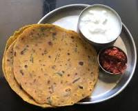
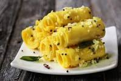
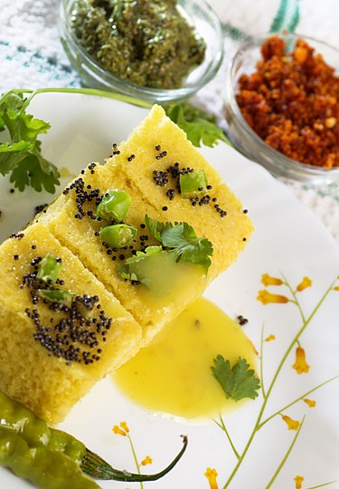
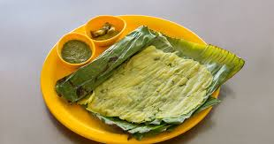

1.Dhokla

• Dhokla is a savoury sponge dish that is native to the Indian state of Gujarat and parts of adjacent states,[1] and is popular throughout the country. It is made with a fermented batter that is steamed to a cake-like consistency. The batter consists of a mixture of rice with the pulse Bengal gram,[2] but has several variants with the gram replaced by chickpeas, pigeon peas, or urad beans.
2.Thepla
• Thepla is a flatbread made from whole wheat flour, spices, and oil. It is a staple food in the Indian state of Gujarat and is also popular in the neighbouring states of Rajasthan, Maharashtra, and Madhya Pradesh. Thepla is a popular breakfast food in Gujarat and is often eaten with a chutney or pickle. It is also a popular snack food and is often served with tea or coffee. Thepla is a healthy food option as it is made with whole wheat flour and is a good source of fiber. It is also a good source of protein and iron. Thepla is a versatile food and can be eaten plain or with a variety of accompaniments such as chutney, pickle, or yogurt. It can also be used as a wrap for sandwiches or as a base for pizzas.
3.Khandvi
• Khandvi is a traditional Gujarati dish made from gram flour and yogurt. It is a popular snack food in Gujarat and is often served at parties and gatherings. Khandvi is a healthy food option as it is made with gram flour, which is a good source of protein and fiber. It is also a good source of calcium and iron. Khandvi is a versatile food and can be eaten plain or with a variety of accompaniments such as chutney, pickle, or yogurt. It can also be used as a wrap for sandwiches or as a base for pizzas. Khand vi is a popular dish in Gujarat and is often served at parties and gatherings. It is a healthy food option as it is made with gram flour, which is a good source of protein and fiber. It is also a good source of calcium and iron. Khandvi is a versatile food and can be eaten plain or with a variety of accompaniments such as chutney, pickle, or yogurt. It can also be used as a wrap for sandwiches or as a base for pizzas.
4.Khaman
• Khaman is a traditional Gujarati dish made from gram flour and yogurt. It is a popular snack food in Gujarat and is often served at parties and gatherings. Khaman is a healthy food option as it is made with gram flour, which is a good source of protein and fiber. It is also a good source of calcium and iron. Khaman is a versatile food and can be eaten plain or with a variety of accompaniments such as chutney, pickle, or yogurt. It can also be used as a wrap for sandwiches or as a base for pizzas. Kham an is a popular dish in Gujarat and is often served at parties and gatherings. It is a healthy food option as it is made with gram flour, which is a good source of protein and fiber. It is also a good source of calcium and iron. Khaman is a versatile food and can be eaten plain or with a variety of accompaniments such as chutney, pickle, or yogurt. It can also be used as a wrap for sandwiches or as a base for pizzas.
5.Panki
• Panki is a traditional Gujarati dish made from rice flour and yogurt. It is a popular snack food in Gujarat and is often served at parties and gatherings. Panki is a healthy food option as it is made with rice flour, which is a good source of protein and fiber. It is also a good source of calcium and iron. Panki is a versatile food and can be eaten plain or with a variety of accompaniments such as chutney, pickle, or yogurt. It can also be used as a wrap for sandwiches or as a base for pizzas. Panki is a popular dish in Gujarat and is often served at parties and gatherings. It is a healthy food option as it is made with rice flour, which is a good source of protein and fiber. It is also a good source of calcium and iron. Panki is a versatile food and can be eaten plain or with a variety of accompaniments such as chutney, pickle, or yogurt. It can also be used as a wrap for sandwiches or as a base for pizzas.
Bala Mohan A S -95072215009 - 3rd Year - B.Tech Information Technology - WEB TECHNOLOGY AND ITS APPLICATIONS - 21IT56063